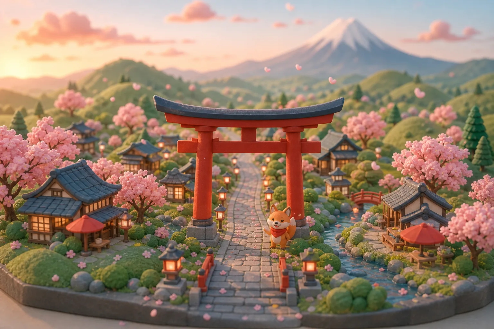
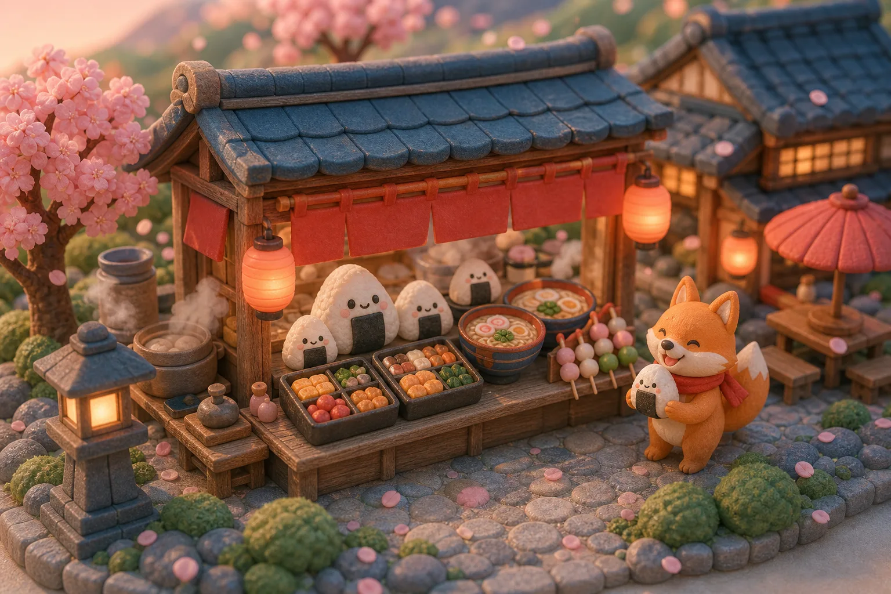
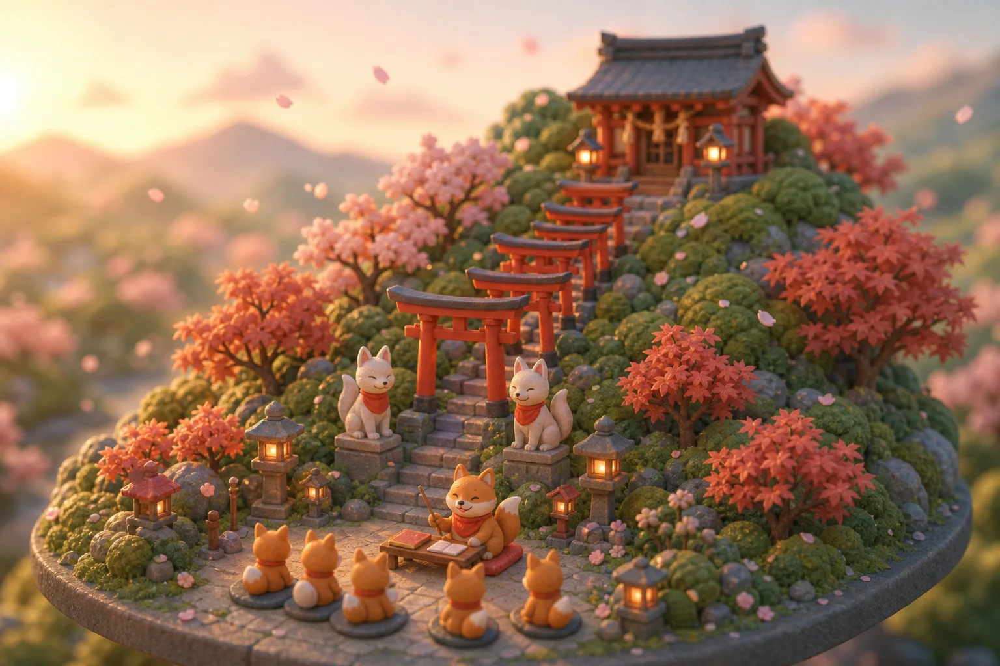
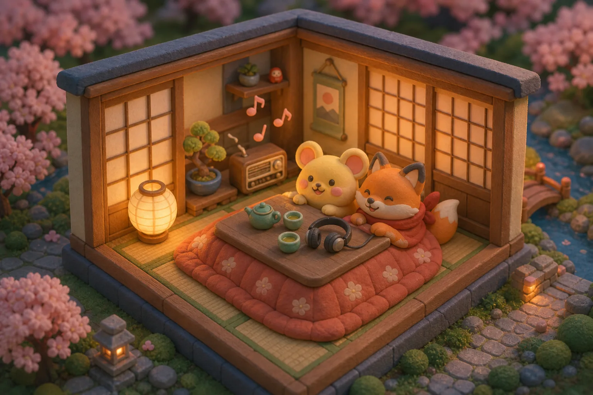
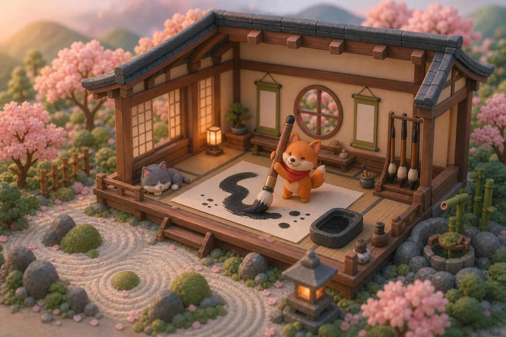
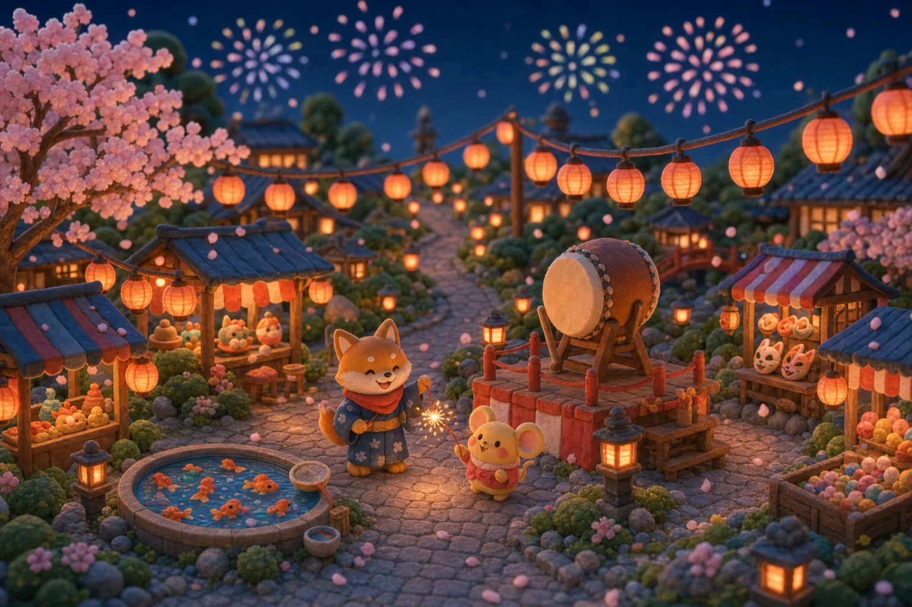

にほんご、はじめよう！ nihongo, hajimeyou! — let's start Japanese!
A free, cute, no-textbook way to learn real everyday Japanese. Bite-size worksheets, games, and audio you can finish with your morning tea — the fox will show you around.

おにぎり を ください。 onigiri o kudasai. — one onigiri, please.
Order onigiri — also called omusubi, same rice ball, two names — pick a bento, ask for ramen. Adaptive flashcards bring back the words you miss right before you'd forget them.

これ は なん ですか。 kore wa nan desu ka. — what is this?
Tiny lessons on this & that, particles, places, and time — each one finishable in minutes, and you always answer before the reveal.

もういちど おねがいします。 mou ichido onegaishimasu. — one more time, please.
Every lesson ships with listening drills: play the audio, answer out loud, then reveal kana, romaji, and English. One day you'll catch a whole anime line without subtitles — the dream. Our very legally distinct yellow friend approves.

かいてみましょう！ kaite mimashou! — let's try writing it!
Kanji lives in its own dojo: draw the strokes, learn picture-story mnemonics, and quiz yourself. Everywhere else stays kana-only, so characters never ambush you mid-lesson.

いっしょに べんきょうしましょう。 issho ni benkyou shimashou. — let's study together.
XP, streaks, and an adaptive study arcade that brings back exactly what you missed. Five minutes a night keeps the lanterns lit.